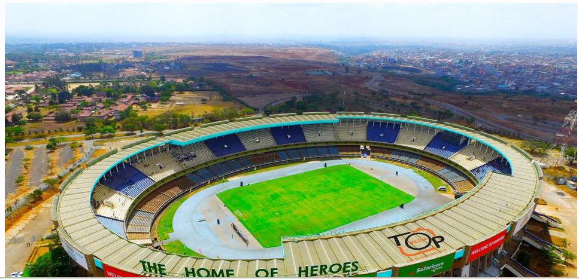
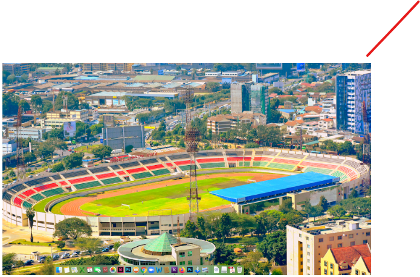
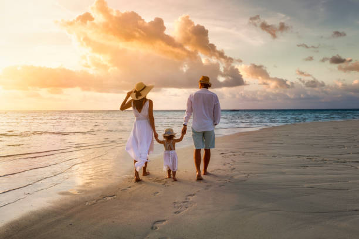

Kasarani Sports Complex
Kasarani Sports Complex is one of the largest sports facilities in Kenya, hosting various events such as football matches, athletics competitions, and concerts. It offers state-of-the-art facilities for training and competitions.
Charge per day: $30
Nyayo National Stadium
Charge per day: $25
Moi International Sports Centre, Kasarani

Charge per day: $35
Mombasa Sports Club
Charge per day: $20